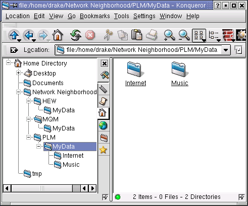
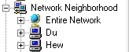
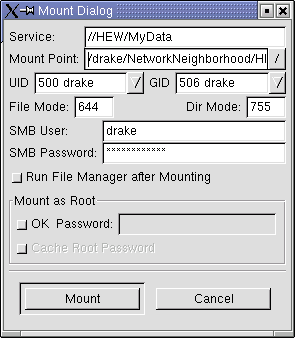
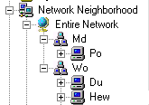

Работа
в сети - одна из наиболее сложных областей работы на компьютере.
Microsoft сделала настройку и использование сети сравнительно простым
занятием для пользователей MS Windows. Как только Windows-компьютер
настроен на работу в локальной сети (LAN), его разделяемые ресурсы
(директории, файлы, принтеры, и т.д) легко могут быть доступны через
Сетевое Окружение.
Сегодня мы попробуем добавить Windows-подобное Сетевое Окружение на
компьютер с Linux. Это даст нам полный доступ ко всем разделяемым
ресурсам всех компьютеров нашей локальной сети.
С точки зрения пользователя, доступ к удалённым ресурсам в Linux
осуществляется не так легко, как в Windows. И это становится ещё
сложнее, когда в сети присутствуют и Linux-, и Windows-компьютеры.
Требуется специальная программа (например, Samba), чтобы
Linux-компьютер мог иметь доступ к разделяемым ресурсам удалённых
Windows-компьютеров. Настройка Samba может быть трудным занятием для
начинающих пользователей Linux. Но всё же...
Обзор LinNeighborhood
LinNeighborhood от Hans Schmid и Richard Stemmer - удобная сетевая
утилита, позволяющая легко просматривать и работать с разделяемыми
ресурсами в Windows-сети. Так же LinNeighborhood можно использовать,
чтобы просматривать и иметь доступ к разделяемым ресурсам
Linux-компьютеров. Короче говоря, LinNeighborhood - простой в установке
и удобный графический интерфейс к Samba.
Существует легко устанавливающийся LinNeighborhood RPM для Mandrake
9.0. Такие дистрибутивы, как SuSE 8.1 и Mandrake 9.1, уже включают в
себя LinNeighborhood. RedHat не включает LinNeighborhood в свои
дистрибутивы и даже не предоставляет эту программу в RPM для своих
дистрибутивов.
Пакеты для других дистрибутивов Linux и исходный код LinNeighborhood
доступны на официальном сайте LinNeighborhood. (см. раздел "Ресурсы" в
конце этой статьи.)
LinNeighborhood нужен для того, чтобы подключать ресурсы удалённых
Windows-компьютеров (директории, файлы, принтеры, и т.д.) и иметь
доступ к ним на вашем Linux-компьютере. Подключать ресурсы можно и из
командной строки, но графические утилиты для этой же цели -
LinNeighborhood, Gnomba, Komba2, и т.д. - будут полезны для начинающих.
На Рисунке 1, ниже, директория "Сетевое Окружение" ("Network
Neighborhood") добавлена в домашнюю директорию пользователя.
LinNeighborhood используется, чтобы добавлять ресурсы удалённых
Windows-компьютеров в эту директорию.
Разделяемые ресурсы можно подключать к любой директории. Каталог
"Сетевое Окружение" был создан для того, чтобы упростить жизнь
пользователей Windows, которые привыкли работать с сетью с помощью
Windows Explorer или других файловых менеджеров. (см. Рисунок 2 ниже).
Название стандартной директории mnt для начинающих пользователей Linux
может показаться очень странным (mnt - сокращение от mount).
Если вас устраивает директория mnt, которая используется по
умолчанию - вам не нужно создавать директорию "Сетевое окружение" и вы
сразу же можете перейти к использованию LinNeighborhood.
Но для IT-менеджеров и системных администраторов очень важно, чтобы
Linux-десктоп был как можно больше похож на Windows-десктоп - таким
образом упрощается переход с Windows на Linux. А это значит - меньше
расходов на обучение и меньше жалоб от пользователей. Папка "Сетевое
окружение" создаётся именно для этого.
Вы также можете использовать LinNeighborhood для работы с
разделяемыми ресурсами Linux. Для этого системный администратор должен
добавить вас как пользователя Samba на каждом Linux-компьютере.
Если вы - достаточно опытный пользователь Linux, лучше используйте
Linux NFS (Сетевая файловая система) для работы с разделяемыми
ресурсами Linux. И вам было бы лучше настроить Samba самому, а не
использовать графический front-end. Но эта статья написана именно для
начинающих.
Термин "монтирование" часто сбивает с толку пользователей Microsoft
Windows. Но на самом деле это не так уж и сложно для понимания.
Фактически, "монтирование" ресурса в Linux очень похоже на "подключение
сетевого диска" в Windows.

Рисунок 1. Директория "Сетевое окружение" создана в домашнем каталоге пользователя.

Рисунок 2. Директория "Сетевое окружение" в файловом менеджере Windows Explorer.
Установка LinNeighborhood
Для начала нужно скачать и установить LinNeighborhood, если его нет
в вашей системе. Вам понадобятся права root для установки
LinNeighborhood.
Для Mandrake 9.0 - скачайте файл
LinNeighborhood-0.6.5-1mdk.i586.rpm. Самый простой путь сделать это -
набрать адрес этого файла (ссылка есть в разделе "Ресурсы") в окне
браузера KDE Konqueror. Затем откройте окно файлового менеджера
Konqueror и скопируйте скачанный файл в вашу домашнюю директорию с
помощью контекстного меню.
Чтобы установить LinNeighborhood в SuSE 8.1 (он уже включён в этот
дистрибутив), зайдите в K-меню > System > YaST2 > Software
> Search и наберите "LinNeighborhood".
Чтобы скачать LinNeighborhood для других дистрибутивов Linux,
поищите его на сайте дистрибутива или на сайте LinNeighborhood. Пакеты
для RedHat 7.x есть на сайте Richard Torkar (раздел "Ресурсы" в конце
этой статьи.)
После скачивания RPM просто щелкните его иконку в файловом менеджере
Konqueror. Появится программа для установки пакетов (для установки
требуются права root).
После того, как LinNeighborhood установлен, в Mandrake 9.0 его можно
найти в K-menu> Networking > Other > LinNeighborhood. В SuSE
8.1: K-menu/SuSE-menu > Internet > Tools > LinNeighborhood.
Для других дистрибутивов Linux используйте Konqueror Find, чтобы найти
исполняемый файл LinNeighborhood. (Tools > Find file. Убедитесь, что
поиск не чувствителен к регистру символов, включает подкаталоги и
начинает поиск в корневом каталоге "/.")
Создание Сетевого окружения в Linux
Откройте вашу домашнюю директорию в файловом менеджере KDE
Konqueror. Зайдите в меню Редактирование > Создать > Директория и
создайте директорию "Сетевое окружение" (или с любым другим именем).
Затем создайте директорию для каждого компьютера в вашей сети, к
ресурсам которого вы хотите иметь доступ. (например, на Рисунке 1
созданы папки для компьютеров HEW, MQM, и PLM).
Просмотр разделяемых ресурсов с помощью LinNeighborhood
После запуска LinNeighborhood показывает доменное имя вашего
Linux-компьютера и имена всех рабочих групп, найденных в локальной
сети. На Рисунке 3, Wuzel - имя компьютера и HERZ-ASS - имя рабочей
группы.
Двойной щелчок на рабочей группе показывает список всех компьютеров
в этой группе. На Рисунке 3, DENISE - единственный компьютер в группе
HERZ-ASS.
Двойной щелчок на компьютере показывает список разделяемых ресурсов этого компьютера.
Если список не появляется, то, возможно, вам нужно ввести имя и
пароль, чтобы иметь доступ к ресурсам этого компьютера. Обычно такое
бывает, если на удалённом компьютере установлен Linux или Windows
NT/2K. В этом случае - ещё раз щёлкните на значок компьютера, а после
этого нажмите на кнопку "Scan as user". Появится диалог ввода имени и
пароля.
Рисунок 3. Скриншот LinNeighborhood, взятый с официального сайта.
Учётные записи на удалённых компьютерах
Чтобы это работало, вам понадобится иметь учётную запись на
удалённом компьютере. Чтобы создать запись на Linux-компьютере, на нём
должен быть запущен Samba и системный администратор должен добавить вас
в качестве пользователя Samba. Это делается достаточно просто - нужно
набрать "smbpasswd -a <ваше имя пользователя>" из консоли root.
Каждый раз, когда вы подключаете разделяемые ресурсы этого
компьютера к вашему, будет появляться диалог для ввода имени
пользователя и пароля.

Рисунок 4. Диалоговая панель LinNeighborhood, которая появляется при подключении.
Если на удалённом компьютере установлен Windows 2000, добавить
пользователя так же просто. Пуск > Настройка > Панель Управления
> Пользователи и Пароли > Добавить.
Совет: Имейте в виду, что имя компьютера и имя пользователя - две
разных вещи. LinNeighborhood показывает имя компьютера в своём окне. Но
вам нужно ввести имя пользователя, под которым вы зарегистрированы на
том компьютере.
Теперь вы готовы к тому, чтобы начать добавление разделяемых ресурсов в папку "Сетевое окружение" на вашем Linux-компьютере.
Добавление ресурсов Windows
Два раза щелкните в окне LinNeighborhood на ресурсе, который вы
хотите смонтировать. После этого появится окно "Mount Dialog" (рис. 4).
LinNeighborhood уже заполнил этот диалог за вас, но вы можете сделать
некоторые изменения.
Первое текстовое поле, Service, показывает путь к ресурсу, который вы хотите смонтировать. Нет необходимости его изменять.
Второе текстовое поле, Mount Point, показывает путь к локальной
директории, в которую будет смонтирован ресурс. По умолчанию там
указывается /home/имя пользователя/mnt/.
Чтобы все разделяемые ресурсы появлялись в каталоге "Сетевое
окружение", который вы создали раньше, измените "/mnt" на "/Сетевое
окружение" (или на имя любого другого каталога)
Затем добавьте имя удалённого компьютера и каталога, который вы
хотите добавить. Пусть имя компьютера - это "WindowsBox 1". Тогда весь
путь будет примерно таким: /home/имя пользователя/Сетевое
окружение/WindowsBox 1/sharename/, если ресурс является директорией на
удалённом компьютере.
Если этот общий пример преобразовать в пример на Рисунке 1, Mount
Point будет заменен с /home/имя пользователя/mnt/ по умолчанию на
/home/имя пользователя/Сетевое окружение/PLM/MyData/.
На Рисунке 4 путь будет таким: /home/имя пользователя/Сетевое
окружение/HEW/MyData/. Просто на Рисунке 1 компьютер называется PLM, а
на Рисунке 4 компьютер называется HEW.
(Полезный совет: Если ваши имя и пароль на удалённом компьютере
совпадают c именем и паролем вашего пользователя на локальном
компьютере, LinNeighborhood подставляет эти имя и пароль в поля SMB
User и SMB Password по умолчанию. Это - достаточно простой трюк.
Но для улучшения вашей безопасности лучше всего каждый раз
использовать различные имена и пароли, чтобы злоумышленникам каждый раз
приходилось подбирать пароль заново. Поэтому этот трюк лучше
пропустить.)
Примечание: LinNeighborhood работает без проблем в Mandrake 9. Но в
SuSE 8.1 или RedHat 8.0 вы можете получить сообщение об ошибке: "Нужно
установить smbclient" или "Нужно установить для smbclient режим +s или
suid".
Если это случится, просто выберите опцию "Mount as Root area" в окне
"Mount Dialog", затем введите пароль root, и после этого нажмите на OK.
Это - решение для SuSE 8.1. В RedHat 8.0 оно не сработает.
Если для подключения ресурсов вам нужны права root, то и для
отключения тоже потребуются права root. Чтобы облегчить процедуру
отключения, наберите в консоли команду su -, зайдите в директорию, в
которой расположены файлы samba-client и smbmount, и наберите "chmod +s
smbumount". В SuSE 8.1 эти файлы лежат в /usr/bin.
Полезный совет: Если вы успешно прошли через процедуру подключения,
попробуйте использовать список, который появляется при нажатии кнопки,
расположенной справа от текстового блока "Mount Point". Этот список
можно использовать для того, чтобы выбрать директорию, в которую вы
хотите смонтировать ресурс.
Теперь откройте ваш файловый менеджер Konqueror и зайдите в папку
"Сетевое окружение". Если всё прошло нормально, вы должны увидеть
содержание удалённого разделяемого ресурса в папке /home/имя
пользователя/Сетевое окружение/имя удалённого компьютера/.
(/home/drake/Network Neighborhood/PLM/MyData/ - на Рисунке 1.)
Кроме того, если владелец этого ресурса открыл его и для чтения и для записи, то и вы должны иметь полный доступ.
Чтобы смонтировать (или подключить) другие ресурсы, просто повторите вышеописанный процесс ещё несколько раз.
Использование Сетевого окружения
После того, как вы смонтировали все ресурсы сети в соответствующие им папки, вы можете работать с ними так же, как и в Windows.
Но, к сожалению, работать с Samba на Linux-компьютере не так же
удобно, как работать с разделяемыми ресурсами в Windows. Не очень
хорошая идея - подключать сразу же все ресурсы, и даже те, которые вы
не будете использовать. К тому же, вам нужно будет размонтировать
ресурсы удалённых компьютеров перед отключением этих компьютеров.
Если вы попытаетесь зайти на уже смонтированный ресурс компьютера,
который был выключен, то у вас может зависнуть файловый менеджер.
Худших случаев я не наблюдал, но говорят, что иногда может зависнуть и
вся система.
Хорошая возможность LinNeighborhood заключается в том, что вы всегда
можете посмотреть, какие ресурсы в данный момент смонтированы -- и это
очень упрощает процесс управления ресурсами. Это отображается в главном
окне LinNeighborhood и в маленькой нижней панели. (Рисунок 4).
Теперь вы поняли, что в Linux вам нужно монтировать каждый
разделяемый ресурс отдельно. Сетевое окружение Microsoft автоматически
делает доступными все ресурсы комьпьютеров в сети.
Обратный доступ
Если вы используете Mandrake 9.0 или добавили ваш Linux-компьютер в
рабочую группу, то пользователи других компьютеров в сети могут
увидеть, что вы экспериментируете с Linux. Если в Windows зайти в
Сетевое окружение -> Вся сеть, вы увидите там рабочие группы,
соответствующие Linux- и Windows-компьютерам. Если вы зайдёте в рабочую
группу Linux, вы увидите там свой компьютер. (На Рисунке 5 рабочая
группа Md соответствует Linux-компьютерам, а группа Wo -
Windows-компьютерам).

Рисунок 5. Сетевое окружение Windows.
Но перед тем, как вы сможете работать с ресурсами Linux-компьютера
из Windows, вы должны настроить учётную запись пользователя и учётную
запись Samba на Linux-компьютере. (Более подробно эта процедура описана
выше - в разделе "Учётные записи на удалённых компьютерах").
Заключение
В этой статье описывается именно LinNeighborhood, потому что эта
программа очень просто устанавливается и без проблем работает в
Mandrake 9.0 и SuSE 8.1. Это делает LinNeighborhood хорошим выбором для
начинающих пользователей Linux.
Вероятно, что LinNeighborhood всё-таки можно заставить нормально
работать в RedHat 8.0 - если почитать Release Notes, разобраться в
конфигурационных файлах, и т.д. Но мы бы не рекомендовали начинающим
комбинацию LinNeighborhood + RedHat 8.0. И вообще, Mandrake и SuSE -
более дружественные дистрибутивы для начинающих.
В Linux есть масса различных способов для работы с удалёнными
файлами, принтерами, и другими ресурсами. Некоторые из них - лучше, чем
другие. То, что нравится одному пользователю Linux, может не нравиться
другому. Сегодня мы рассмотрели один из лучших выборов для тех, кто
переходит с Windows на Linux.
Такие программы, как LinNeighborhood, вносят ценный вклад в
упрощение работы с Linux. Но, тем не менее, в настоящий момент работать
с разделяемыми ресурсами в Windows проще, чем в Linux.
Чтобы сделать этот аспект работы в Linux таким же простым, как в
Windows, создатели дистрибутива могли бы сконфигурировать Samba или
другие программы таким образом, чтобы при установке Linux автоматически
находились и монтировались все разделяемые ресурсы локальной сети.
Тогда, если пользователь Linux захочет зайти на сетевой компьютер, ему
будет достаточно просто зайти в специальную папку - как будто он зашел
в Сетевое окружение Windows.
Самое интересное - то, что компания Caldera реализовала это в своём дистрибутиве OpenLinux 3.1 ещё в июне 2001 года. В сентябре 2002 года Caldera превратилась в SCO - но это уже совсем другая история...
Ресурсы
Сайт LinNeighborhood
Руководство по использованию LinNeighborhood
Скачать LinNeighborhood
Документация Samba
Web-страницы Samba
RPM-пакеты LinNeighborhood для SuSE
RPM-пакеты для Red Hat от Richard Torkar
Книга: Samba Unleashed, Steve Litt, Sams, ISBN:0672318628 ($45)